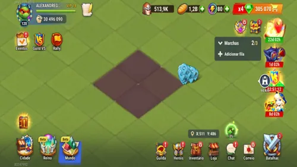

Braune Reich-Felder: Warum Eure Gilde Früh Umziehen Sollte
- Von: Alexandre Domingos. .
Hallo zusammen, hier ist Alexandre von Alexandre Games. Ich glaube, dass viele Spieler im neuen Reich-Modus einen kostspieligen Fehler machen: Sie bauen in der Nähe ihrer Startposition, während die stärksten Gilden bereits in Richtung Zentrum ziehen. Diese Entscheidung mag sich heute sicher anfühlen, könnte meiner Meinung nach aber darüber bestimmen, wer morgen die Saison kontrolliert.
Schaut euch die vier braunen Felder in der Mitte der Reich-Karte genau an. Auf den ersten Blick wirken sie vielleicht nicht besonders spektakulär, doch dort befinden sich die besten Ressourcengebäude, stärkere Monster und Rallye-Bosse auf deutlich engerem Raum. Lohnt es sich, das Risiko einer Teleportation dorthin einzugehen? Ich zeige euch, warum ein früher Umzug meiner Meinung nach einen Vorteil schaffen kann, der jeden Tag wächst, und warum eure Gilde leer ausgehen könnte, wenn sie zu lange wartet.
Seht euch unten meine vollständige Strategie für die Reich-Karte in Hero Wars Alliance an, um zu erfahren, wo die vier braunen Felder liegen und warum ihre Position so wichtig ist. Die vollständige strategische Analyse folgt direkt nach dem Video.

▶ Dieses Video auf YouTube ansehen
Warum die Braunen Felder im Reich so Wichtig Sind
Das Zentrum ist der wertvollste Teil der Karte, weil die dortigen Ressourcenorte eine höhere Stufe haben. Holz, Nahrung, Stein und Eisen werden schneller verfügbar, sodass eure Gilde früher Verbesserungen vornehmen kann. Stärkere Monster und nahe gelegene Rallye-Bosse machen dieses Gebiet außerdem effizienter für aktive Spieler. Entscheidend ist nicht eine einzelne spektakuläre Belohnung, sondern der stetige Strom kleiner Vorteile, solange eure Gilde eine gute Position hält.
Ich halte die Marschzeit für eine der am meisten unterschätzten Ressourcen im Reich. Jede Minute, die eure Helden mit dem Überqueren der Karte verbringen, ist eine Minute, in der sie weder Ressourcen sammeln noch kämpfen. Kürzere Wege ermöglichen den Mitgliedern mehr Aktionen bei gleicher Spielzeit. Auf eine gesamte Gilde und mehrere Tage gerechnet werden aus diesen eingesparten Minuten viele Stunden zusätzlicher Fortschritt.

Der Schneeballeffekt Beginnt Früher, als Ihr Denkt
Besseres Sammeln führt zu schnelleren Verbesserungen; schnellere Verbesserungen machen die Gilde stärker; und diese Stärke erleichtert es, wertvolle Ziele zu besiegen und wichtige Gebiete zu verteidigen. Das ist der Schneeballeffekt des Reichs. Ein kleiner Vorsprung in den ersten Tagen kann zu einem Abstand werden, den andere Gilden später in der Saison nur schwer aufholen können.
Deshalb würde ich eine Position nicht nur danach beurteilen, wie bequem sie im Moment aussieht. Fragt euch, was sie nach drei, fünf oder zehn Tagen einbringen wird. Ein ruhiges Startgebiet kann euch vor frühen Konflikten schützen, aber auch jede Verbesserung verlangsamen, während ambitionierte Gilden ihren Vorteil im Zentrum vervielfachen.
Sollte Sich Eure Gilde ins Zentrum Teleportieren?
Für eine Gilde, die ernsthaft konkurrieren will, lautet meine Antwort: Ja. Zieht früh und gemeinsam um. Ein koordinierter Standortwechsel verschafft den Mitgliedern Zugang zu demselben wertvollen Gebiet und hilft der Gilde, nützliche Positionen zu sichern, bevor die Karte überfüllt ist. Wenn sich nur wenige Spieler teleportieren und alle anderen zurückbleiben, verliert die Gilde einen großen Teil des strategischen Vorteils.
Der Zeitpunkt ist wichtig, denn die vier braunen Felder werden nicht friedlich bleiben. Andere Gilden erkennen dieselbe Chance, und die stärksten Gruppen werden früher oder später um dieses Gebiet kämpfen. Eine frühe Ankunft garantiert keinen Sieg, doch wer spät kommt, muss sich bereits etablierten Rivalen stellen und gleichzeitig versuchen, den noch verbliebenen Platz zu finden.
Das Risiko für Kleinere und Gelegenheitsspieler-Gilden
Ich glaube nicht, dass jede Gilde ohne Plan direkt ins Zentrum stürmen sollte. Die Belohnungen sind ausgezeichnet, aber der Wettbewerb wird deutlich härter sein. Eine kleinere oder eher lockere Gilde sollte ihre Aktivität, Koordination und Verteidigungsfähigkeit mit der zu erwartenden Konkurrenz vergleichen. Manchmal liegt die klügste Position nah genug, um von kürzeren Märschen zu profitieren, ohne direkt im Weg der größten Gilden zu stehen.
Sprecht mit eurer Gilde, bevor jemand eine Teleportation verbraucht. Wählt ein Zielgebiet, vereinbart einen Zeitpunkt und stellt sicher, dass die Mitglieder den Grund für den Umzug verstehen. Das Reich belohnt Teamarbeit stärker als einzelne Entscheidungen, und eine klare Strategie kann aus einer gewöhnlichen Gilde einen Nachbarn machen, der sich nur schwer vertreiben lässt.
Mein Urteil: Lasst Einen Sicheren Start Nicht zur Langsamen Niederlage Werden
Meiner Meinung nach ist der Standort viel wichtiger, als viele Spieler erkennen. Wenn eure Gilde die Spitzenreiter herausfordern möchte, könnte der Umzug in Richtung der braunen Felder während der ersten Tage eine der wichtigsten Entscheidungen der gesamten Saison sein. Ihr braucht weiterhin Aktivität, Koordination und Stärke, doch das Zentrum bietet allen drei Faktoren mehr Raum zum Wachsen.
Hat eure Gilde bereits entschieden, wo sie sich niederlassen wird? Bleibt ihr in der Nähe des Startgebiets, bezieht ihr eine Position knapp außerhalb des Zentrums oder stürmt ihr direkt zu den vier braunen Feldern? Teilt eure Strategie in den Kommentaren und denkt daran: Auch das Warten ist im Reich eine Entscheidung, aber nicht immer die richtige.
Entdeckt neue Strategien mit unseren empfohlenen Guides!


Teilt Eure Meinung!
Hat euch meine Strategie für die braunen Felder im Reich gefallen? Habt ihr etwas nicht verstanden oder würdet ihr eine andere Position wählen? Nutzt die Kommentare bei Alexandre Games, um den Plan eurer Gilde zu teilen, Fragen zu stellen und Verbesserungen vorzuschlagen.
Klickt auf die Schaltfläche unten, um zu beginnen: